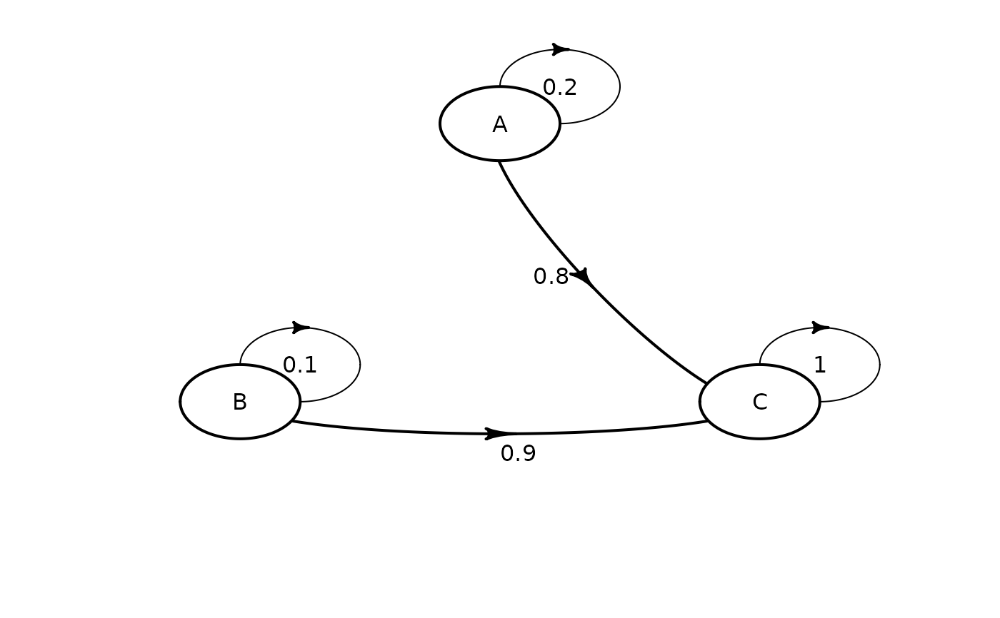

R/matrix_define.R, R/matrix_plot.R
define_transition.RdDefine a matrix of transition probabilities. Probability
can depend on parameters defined with
define_parameters(), and can thus be time-dependent.
Name-value pairs of expressions definig matrix
cells. Can refer to parameters defined with
define_parameters(). For plot, additional arguments
passed to diagram::plotmat().
character vector, optional. State names.
Used to work around non-standard evaluation.
An object of class uneval_matrix.
An uneval_matrix to plot.
Argument passed to diagram::plotmat().
Argument passed to
diagram::plotmat().
Argument passed to diagram::plotmat().
An object of class uneval_matrix (actually a
named list of lazy expressions).
Matric cells are listed by row.
Parameters names are searched first in a parameter object
defined with define_parameters() and linked with the
matrix through define_strategy(); then in the
environment where the matrix was defined.
The complementary probability of all other row
probabilities can be conveniently referred to as C.
The matrix code can be re-indented for readability with
reindent_transition().
Only matrix size is checked during this step (the matrix must be square). Other conditions (such as row sums being equal to 1) are tested later, during model evaluation.
For the modify function, existing matrix cells are
replaced with the new expression. Cells are referenced by
name. Cell naming follows the cell_x_y convention, with
x being the row number and y the column number.
# simple 3x3 transition matrix
mat_1 <- define_transition(
.2, 0, .8,
0, .1, .9,
0, 0, 1
)
#> No named state -> generating names.
mat_1
#> A transition matrix, 3 states.
#>
#> A B C
#> A 0.2 0.8
#> B 0.1 0.9
#> C 1
plot(mat_1)
#> Loading required namespace: diagram

# referencing parameters
# rr must be present in a parameter object
# that must later be linked with define_strategy
mat_2 <- define_transition(
.5 - rr, rr,
.4, .6
)
#> No named state -> generating names.
mat_2
#> A transition matrix, 2 states.
#>
#> A B
#> A 0.5 - rr rr
#> B 0.4 0.6
reindent_transition(mat_2)
#> state_names = c(
#> "A" , "B")
#> 0.5 - rr, rr ,
#> 0.4 , 0.6
# can also use C
define_transition(
C, rr,
.4, .6
)
#> No named state -> generating names.
#> A transition matrix, 2 states.
#>
#> A B
#> A C rr
#> B 0.4 0.6
# updating cells from mat_1
modify(
mat_1,
cell_2_1 = .2,
cell_2_3 = .7
)
#> A transition matrix, 3 states.
#>
#> A B C
#> A 0.2 0.8
#> B 0.2 0.1 0.7
#> C 1
# only matrix size is check, it is thus possible
# to define an incorrect matrix
# this matrix will generate an error later,
# during model evaluation
define_transition(
.5, 3,
-1, 2
)
#> No named state -> generating names.
#> A transition matrix, 2 states.
#>
#> A B
#> A 0.5 3
#> B -1 2